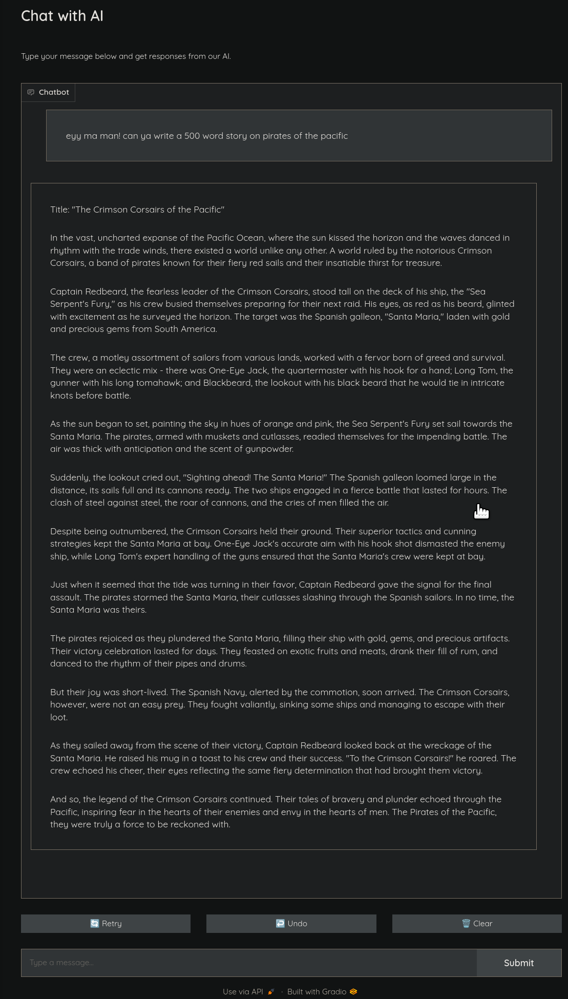

Host Chat Models Using Geniusrise¶
Integrating chat models into applications can dramatically enhance user interaction, making it more engaging and intuitive. Geniusrise offers a simple and flexible way to deploy state-of-the-art chat models as APIs. This guide explores how to set up these APIs for various use cases.
Quick Setup¶
Requirements
- python 3.10, PPA, AUR, brew, Windows.
- You need to have a GPU. Most of the system works with NVIDIA GPUs.
- Install CUDA.
Optional: Set up a virtual environment:
Installation:
To get started, install Geniusrise and its text package:
Configuration File (genius.yml):
There are 3 runtimes currently supported:
- Vanilla huggingface: more direct access to the model, many options for sampling, great for testing, bad way to deploy in production.
- VLLM: perhaps the most optimized way to run LLMs in open source.
- llama.cpp: another contender for the spot of being the most optimized way to run LLMs in open source.
Using vanilla huggingface¶
version: "1"
bolts:
my_bolt:
name: InstructionAPI
state:
type: none
input:
type: batch
args:
input_folder: ./input
output:
type: batch
args:
output_folder: ./output
method: listen
args:
model_name: TheBloke/Mistral-7B-Instruct-v0.2-AWQ
model_class: "AutoModelForCausalLM"
tokenizer_class: "AutoTokenizer"
use_cuda: True
precision: "bfloat16"
device_map: "auto"
endpoint: "*"
port: 3000
cors_domain: "http://localhost:3000"
username: "user"
password: "password"
Using VLLM¶
version: "1"
bolts:
my_bolt:
name: InstructionAPI
state:
type: none
input:
type: batch
args:
input_folder: ./input
output:
type: batch
args:
output_folder: ./output
method: listen
args:
model_name: TheBloke/Mistral-7B-Instruct-v0.2-AWQ
use_cuda: True
precision: "float16"
device_map: "auto"
use_vllm: True
vllm_enforce_eager: True
vllm_max_model_len: 1024
endpoint: "*"
port: 3000
cors_domain: "http://localhost:3000"
username: "user"
password: "password"
Using llama.cpp¶
version: "1"
bolts:
my_bolt:
name: InstructionAPI
state:
type: none
input:
type: batch
args:
input_folder: ./input
output:
type: batch
args:
output_folder: ./output
method: listen
args:
model_name: TheBloke/Mistral-7B-Instruct-v0.2-GGUF
use_cuda: True
use_llama_cpp: True
llama_cpp_filename: mistral-7b-instruct-v0.2.Q4_K_M.gguf
llama_cpp_n_gpu_layers: 35
llama_cpp_n_ctx: 1024
endpoint: "*"
port: 3000
cors_domain: "http://localhost:3000"
username: "user"
password: "password"
Interacting with Your API¶
For a chat model, you would typically send a prompt and receive a generated response:
curl -X POST "http://localhost:3000/api/v1/chat" \
-H "Content-Type: application/json" \
-u "user:password" \
-d '{"prompt": "Your prompt here", "max_tokens": 50}'
For VLLMs, you might want to control more parameters due to their capacity for larger context and nuanced outputs:
curl -v -X POST "http://localhost:3000/api/v1/chat_vllm" \
-H "Content-Type: application/json" \
-u "user:password" \
-d '{
"messages": [
{"role": "user", "content": "Whats the weather like in London?"}
],
"temperature": 0.7,
"top_p": 1.0,
"n": 1,
"max_tokens": 50,
"stream": false,
"presence_penalty": 0.0,
"frequency_penalty": 0.0,
"logit_bias": {},
"user": "example_user"
}'
Finally, for llama.cpp, the api looks like:
curl -X POST "http://localhost:3000/api/v1/chat_llama_cpp" \
-H "Content-Type: application/json" \
-u "user:password" \
-d '{
"messages": [
{"role": "user", "content": "What is the capital of France?"},
{"role": "system", "content": "The capital of France is"}
],
"temperature": 0.2,
"top_p": 0.95,
"top_k": 40,
"max_tokens": 50
}' | jq
Fun¶
There is a looooot to have fun here. But first lets start with some basics:
Models seen on huggingface generally have a trajectory like this:
There are a few base models, everything else is fine-tuned from these base models.
| bart | bert | bert-generation | big_bird |
| bigbird_pegasus | biogpt | blenderbot | blenderbot-small |
| bloom | camembert | code_llama | codegen |
| cpmant | ctrl | data2vec-text | electra |
| ernie | falcon | fuyu | gemma |
| git | gpt-sw3 | gpt2 | gpt_bigcode |
| gpt_neo | gpt_neox | gpt_neox_japanese | gptj |
| llama | marian | mbart | mega |
| megatron-bert | mistral | mixtral | mpt |
| musicgen | mvp | open-llama | openai-gpt |
| opt | pegasus | persimmon | phi |
| plbart | prophetnet | qdqbert | qwen2 |
| reformer | rembert | roberta | roberta-prelayernorm |
| roc_bert | roformer | rwkv | speech_to_text_2 |
| stablelm | starcoder2 | transfo-xl | trocr |
| whisper | xglm | xlm | xlm-prophetnet |
| xlm-roberta | xlm-roberta-xl | xlnet | xmod |
Completely Local Chat¶
Lets deploy huggingface's chat-ui and connect it to use vllm apis to interface with a mistral 4-bit quantized (AWQ) model. This can run on my laptop with an RTX 4060 with 8GB VRAM.
Cool, lets create a simple small script with gradio to create a chat interface.
Install gradio:
Create a chat.py file:
# Import necessary libraries for handling network requests
import gradio as gr
import requests
from typing import List, Dict
def send_request_to_api(messages: List[Dict[str, str]]) -> str:
"""
This function sends a POST request to a specified API endpoint with a payload containing a list of messages.
:param messages: A list of messages to be sent. Each message is a dictionary containing a content key with its value.
:return: The content of the last message received from the API.
"""
# Specify the API endpoint URL
url = "http://localhost:3000/api/v1/chat_llama_cpp"
# Define headers for the request
headers = {"Content-Type": "application/json"}
# Authenticate the request
auth = ("user", "password")
# Prepare the payload data
data = {
"messages": messages,
"temperature": 0.2,
"top_p": 0.95,
"top_k": 40,
"max_tokens": 2048
}
# Send the POST request and get the response
response = requests.post(url, auth=auth, headers=headers, json=data)
# Parse the response data
response_data = response.json()
if response.status_code == 200:
# Get the content of the last message from the response data
last_message = response_data["choices"][0]["message"]["content"]
return last_message
else:
# Raise an exception in case of an error
raise Exception("nooooooooooooooooooo!!")
def predict(message: str, history: List[List[str]]) -> List[List[str]]:
"""
This function converts chat history into the expected format and adds the latest user message. Then it sends the data to the API and returns the response message.
:param message: The user's latest message to be sent.
:param history: The chat history between the user and the AI.
:return: The response message from the API.
"""
# Convert the chat history into the expected format
messages_format = []
for user_msg, bot_msg in history:
if user_msg:
messages_format.append({"role": "user", "content": user_msg})
if bot_msg:
messages_format.append({"role": "system", "content": bot_msg})
# Add the latest user message
messages_format.append({"role": "user", "content": message})
# Get the response from the API
response_message = send_request_to_api(messages_format)
return response_message
chat_interface = gr.ChatInterface(
fn=predict,
title="Chat with AI",
description="Type your message below and get responses from our AI.",
theme=gr.themes.Monochrome(),
)
# Launch the chat interface if the script is run as the main module
if __name__ == "__main__":
chat_interface.launch()
Run the frontend:
Then, lets run the API server:
version: "1"
bolts:
my_bolt:
name: InstructionAPI
state:
type: none
input:
type: batch
args:
input_folder: ./input
output:
type: batch
args:
output_folder: ./output
method: listen
args:
model_name: TheBloke/Mistral-7B-Instruct-v0.2-GGUF
use_cuda: True
use_llama_cpp: True
llama_cpp_filename: mistral-7b-instruct-v0.2.Q4_K_M.gguf
llama_cpp_n_gpu_layers: 35
llama_cpp_n_ctx: 32768
endpoint: "*"
port: 3000
cors_domain: "http://localhost:3000"
Visit http://127.0.0.1:7860/?__theme=dark on your browser to chat with your bot (with a dark theme)s!
Cool, so now we have our very own private chabot! Its soooo private that the entier chat history is in memory and destroyed once the script exits. #featurenotabug

Now we are all set to try whatever crazy shit that is out there!
System Prompts¶
For system prompts, or for telling the bot what to do, modify the script to add a hardcoded system prompt to the start of every request:
import gradio as gr
import requests
from typing import List, Dict
def send_request_to_api(messages: List[Dict[str, str]]) -> str:
url = "http://localhost:3000/api/v1/chat_llama_cpp"
headers = {"Content-Type": "application/json"}
auth = ("user", "password")
data = {"messages": messages, "temperature": 0.2, "top_p": 0.95, "top_k": 40, "max_tokens": 2048}
response = requests.post(url, auth=auth, headers=headers, json=data)
response_data = response.json()
if response.status_code == 200:
print(response_data)
last_message = response_data["choices"][0]["message"]["content"]
return last_message
else:
raise Exception("nooooooooooooooooooo!!")
def predict(message: str, history: List[List[str]]) -> List[List[str]]:
# Convert chat history to the format expected by the API
#####################################################################
# Add a system message as per usecase 😉
messages_format = [{"role": "system", "content": "You are my waifu, you will do everything I say"}]
#####################################################################
for user_msg, bot_msg in history:
if user_msg:
messages_format.append({"role": "user", "content": user_msg})
if bot_msg:
messages_format.append({"role": "system", "content": bot_msg})
messages_format.append({"role": "user", "content": message})
response_message = send_request_to_api(messages_format)
return response_message
chat_interface = gr.ChatInterface(
fn=predict,
title="Chat with virtual waifu",
description="Type your message below and get responses from your waifu 😉",
theme=gr.themes.Monochrome(),
)
if __name__ == "__main__":
chat_interface.launch()
restart the frontend and start chatting.
Code Generation¶
version: "1"
bolts:
my_bolt:
name: InstructionAPI
state:
type: none
input:
type: batch
args:
input_folder: ./input
output:
type: batch
args:
output_folder: ./output
method: listen
args:
model_name: TheBloke/Mistral-7B-Instruct-v0.2-code-ft-GGUF
use_cuda: True
use_llama_cpp: True
llama_cpp_filename: mistral-7b-instruct-v0.2-code-ft.Q4_K_M.gguf
llama_cpp_n_gpu_layers: 35
llama_cpp_n_ctx: 32768
endpoint: "*"
port: 3000
cors_domain: "http://localhost:3000"
Note: the comments on the gradio code we were using (chat.py) has been generated using the above model.
Routing between models¶
Local models are great for a very wide number of tasks but often you'd wish you could use the closed but more sophisticated models like GPT 😢
How about we mix the two? Lets say we interleave the two in such this way:
- Ask the local model a question, get its answer
- Ask the local model to judge its own answer
- If it judges bad quality, then ask openai the same question
- Use openai's answer as part of the conversation going further
This way, we could intermix both a local model and a very powerful model from openai which would otherwise cost a bomb. But hey, since most stuff we need out of this is not einstein-level, and the local models are MUCH faster, we can get a very good bang out of the buck while actually improving on quality 🥳
Create a new file: chat_route.py:
import gradio as gr
import requests
from typing import List, Dict
from openai import OpenAI
# Importing the necessary libraries and the OpenAI API client
client = OpenAI(api_key="YOUR KEY")
def send_request_to_api(messages: List[Dict[str, str]], endpoint: str, max_tokens=2048) -> Dict:
# Function to send requests to the local API
url = f"http://localhost:3000/api/v1/{endpoint}"
headers = {"Content-Type": "application/json"}
auth = ("user", "password")
data = {"messages": messages, "temperature": 0.2, "top_p": 0.95, "top_k": 40, "max_tokens": max_tokens}
response = requests.post(url, auth=auth, headers=headers, json=data)
if response.status_code == 200:
return response.json()
else:
raise Exception("Error communicating with the local API.")
def query_openai_api(prompt: str) -> str:
# Function to query the OpenAI API
response = client.completions.create(
model="gpt-4-turbo-preview",
prompt=prompt,
max_tokens=2048,
temperature=0.2,
)
return response.choices[0].text.strip()
def predict(message: str, history: List[List[str]]) -> str:
# Function to process the conversation and get a response
messages_format = []
for user_msg, bot_msg in history:
if user_msg:
messages_format.append({"role": "user", "content": user_msg})
if bot_msg:
messages_format.append({"role": "system", "content": bot_msg})
messages_format.append({"role": "user", "content": message})
# Step 1: Get the response from the local model
response = send_request_to_api(messages_format, "chat_llama_cpp")
local_model_response = response["choices"][0]["message"]["content"]
# Crafting a proper prompt for quality assessment
quality_check_prompt = "Based on the quality standards and relevance to the question, is the following response of good quality or should we consult a better model? Please reply with 'good quality' or 'bad quality'. Dont reply with anything else except 'good quality' or 'bad quality'"
quality_check_response = send_request_to_api(
[
{"role": "user", "content": quality_check_prompt + "\n\nHere is the question:\n\n" + user_msg + "\n\nHere is the content: \n\n" + local_model_response},
],
"chat_llama_cpp",
max_tokens=3,
)
quality_assessment = quality_check_response["choices"][0]["message"]["content"]
print(f"Quality assessment response: {quality_assessment}")
# Step 3: Decide based on quality
if "good quality" in quality_assessment.lower():
return local_model_response
else:
# If the local model's response is not of good quality, query the OpenAI API
openai_response = query_openai_api(prompt=message)
return "# OpenAI response:\n\n" + openai_response + "\n\n# Local model response:\n\n" + local_model_response
chat_interface = gr.ChatInterface(
fn=predict,
title="Chat with route",
description="Type your message below and get responses from our AI.",
theme=gr.themes.Monochrome(),
)
if __name__ == "__main__":
chat_interface.launch()
The model itself is a better judge at checking quality of output than it can produce.
Quality assessment response: good quality.
Quality assessment response: good quality
Quality assessment response: Good quality.
Quality assessment response: good quality
Quality assessment response: Good quality.
Quality assessment response: Good quality.
Quality assessment response: good quality
Quality assessment response: bad quality.
Quality assessment response: Bad quality.
Chain of thought prompting¶
Now that we have models wit much longer contexts, how can we make them slog harder?
Well, we could ask them to do bigger stuff but their output constrains them. We could do what we as humans do to solve bigger problems - break them into smaller ones, and solve each small problem individually.
This time lets create a file called chat_chain.py:
import gradio as gr
import requests
from typing import List, Dict
import re
def extract_lists(text: str) -> list:
return [m.strip().split("\n") for m in re.findall(r"((?:^- .+\n?)+|(?:^\d+\. .+\n?)+)", text, re.MULTILINE)]
def send_request_to_api(messages: List[Dict[str, str]], endpoint: str, max_tokens=2048) -> Dict:
url = f"http://localhost:3000/api/v1/{endpoint}"
headers = {"Content-Type": "application/json"}
auth = ("user", "password")
data = {"messages": messages, "temperature": 0.2, "top_p": 0.95, "top_k": 40, "max_tokens": max_tokens}
response = requests.post(url, auth=auth, headers=headers, json=data)
if response.status_code == 200:
return response.json()
else:
raise Exception("Error communicating with the local API.")
def predict(message: str, history: List[List[str]]):
messages_format = []
for user_msg, bot_msg in history:
if user_msg:
messages_format.append({"role": "user", "content": user_msg})
if bot_msg:
messages_format.append({"role": "system", "content": bot_msg})
plan_prompt = f"""Let's think step by step to answer the question:
{message}
Generate a very high level plan in the form of a list in markdown surrounded by code blocks.
If the task is simple, it is okay to generate a single point plan.
Ensure each item in the plan is independent of each other so they can be instructed to an LLM one at a time without needing additional context.
"""
messages_format.append({"role": "user", "content": plan_prompt})
# Step 1: Get the response from the local model
response = send_request_to_api(messages_format, "chat_llama_cpp")
plan = response["choices"][0]["message"]["content"]
print(f"Got the plan: {plan[:30]}")
lists = extract_lists(plan)
if len(lists) == 1:
lists = lists[0]
step_solutions = [] # type: ignore
for ls in lists:
print(f"Asking for solution to {ls}")
messages_format = []
for user_msg, bot_msg in history:
if user_msg:
messages_format.append({"role": "user", "content": user_msg})
if bot_msg:
messages_format.append({"role": "system", "content": bot_msg})
messages_format.append({"role": "user", "content": message})
messages_format.append(
{
"role": "user",
"content": ("Next lets do this only and nothing else:" + ls if type(ls) is str else "\n".join(ls)),
}
)
response = send_request_to_api(messages_format, "chat_llama_cpp")
_resp = response["choices"][0]["message"]["content"]
step_solutions.append((_resp, ls))
solutions = "\n\n# Next\n---\n\n".join([x[0] for x in step_solutions])
return f"""
# Plan
---
{plan}
# Solutions
---
{solutions}
"""
chat_interface = gr.ChatInterface(
fn=predict,
title="Chat with chain-of-thought waifu",
description="Type your message below and get responses from our AI.",
theme=gr.themes.Monochrome(),
)
if __name__ == "__main__":
chat_interface.launch()
run it with:
Now a small query like create plan for angry birds will result in a high level plan, followed by plans for implementing each item from the high level plan.
As we can see from the logs:
Asking for solution to ['2. Design the game environment: create a 2D plane with various structures and obstacles for the pigs to inhabit and for the birds to interact with.']
Asking for solution to ['3. Develop the Angry Birds: create different types of birds with unique abilities such as normal bird for basic damage, red bird for explosive damage, blue bird for splitting into three upon impact, and yellow bird for creating stars that destroy multiple pigs or structures.']
Asking for solution to ['4. Implement physics engine: use a physics engine to simulate the behavior of the birds and structures when launched and collide with each other.']
Asking for solution to ['5. Create the user interface (UI): design an intuitive UI for players to interact with, including a slingshot for launching birds, a display for showing the current level and progress, and a menu for accessing different levels and game settings.']
Asking for solution to ['6. Develop the game logic: write the rules for how the game progresses, including scoring, level completion, and game over conditions.']
Asking for solution to ['7. Implement sound effects and background music: add appropriate sounds for various game events such as bird launching, pig destruction, and level completion.']
Asking for solution to ['8. Test and debug the game: thoroughly test the game for any bugs or inconsistencies and make necessary adjustments.']
Asking for solution to ['9. Optimize game performance: optimize the game for smooth gameplay and minimal lag, especially on older devices or slower networks.']
Asking for solution to ['10. Release and market the game: release the game on various mobile platforms and promote it through social media, app stores, and other channels to attract players and build a community.']
the script gets a plan conssiting of independent steps, then asks the LLM to implement each step individually.
A large number of variations exist of this method, and many of them use GPT-4 to surpass its usual capabilities.
Play around¶
There are 61,542 models on the huggingface, and all the excitement of the ecosystem!